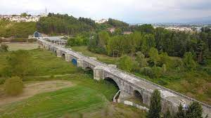
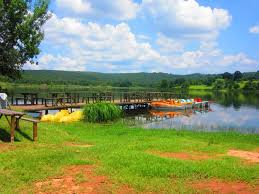

Acarlar Longozu
Acarlar Longozu, Sakarya şehir merkezinden yaklaşık olarak 60 km uzaklıkta yer almaktadır. Acarlar Longozu’na ulaşım gerçekleştirmek isteyen tatilciler; özel araçlarını ve taksileri kullanabilir. Acarlar Longozu, çok sayıda canlı türüne ev sahipliği yaptığından dolayı; burada çeşitli canlı türlerini incelemek mümkündür. Acarlar Longozu’nda bulunan işletmeler; göl bisikletleri ile su üstünde gezme imkanı sunmaktadır. Keyifli bir göl bisikleti turu yapan tatilciler; eşsiz manzaranın tadını çıkarabilir ve hemen ardından uzun doğa yürüyüşlerine çıkabilir. Acarlar Longozu, haftanın her günü ve günün her saati ziyaret edilebilmektedir. Acarlar Longozu’na giriş yapabilmek için herhangi bir giriş ücreti ya da giriş kısıtlaması bulunmamaktadır.
Kent Park
Sakarya Kent Park kent merkezinde, 160 bin metrekare alanın enkazdan yeşile dönüştürülmesiyle oluşturulmuştur. Eski Zirai Donatım Kurumu Fabrikası arazisine inşa edilen ve yaklaşık 4 bin 500 metre karelik yürüyüş alanına sahip, Kent parktaki doğal ortam ve ağaçlar korunarak tüm yüzey çimlendirilmiştir. Parkta 14 bin metrekare gölet bulunmaktadır. Kent park, yanına kurulduğu Çark Deresi sayesinde her mevsim yeşildir. Parkın orta yerine inşa edilen gölet ve üzerinde yer alan adacıklara ulaşmak için iki köprü inşa edilmiştir. Adacıklardaki ağaç gölgeleriyle serin ve huzurlu bir ortamın sunulduğu parkta spor yapmak için de faklı bölümler de bulunmaktadır.

Justinianus Köprüsü
Sakarya şehir merkezinden aşağı yukarı 10 km uzaklıkta yer alan Justinianus Köprüsü’ne ulaşım; özel araç ve taksiler aracılığı ile kolayca gerçekleştirilebilir.
Justinianus Köprüsü, ünlü Bizans yapılarından bir tanesidir. Toplam uzunluğu 365 metreye ulaşan Justinianus Köprüsü; aynı zamanda 12 kemere sahiptir. Justinianus Köprüsü’nü ziyaret eden gezginler; şehrin tarihi dokusunu ve mimarisini inceleyebilir, köprü üzerinde manzaraya karşı hoş fotoğraflar çekilebilir.
Justinianus Köprüsü, yılın her günü ve günün her saati ziyarete açıktır.
Justinianus Köprüsü’nü ziyaret edebilmek için herhangi bir giriş ücreti ya da giriş kısıtlaması bulunmamaktadır.

Poyrazlar Gölü
Sakarya şehir merkezinin ortalama olarak 12 km uzağında yer alan Poyrazlar Gölü’ne ulaşım; özel araç ve taksiler aracılığı ile kolayca gerçekleştirilebilir. Poyrazlar Gölü, oldukça ilgi çekici manzarası ve doğası ile ziyaretçilerini büyüleyen noktalardan bir tanesidir. Poyrazlar Gölü’nde harika gün batımı manzarasına karşı çay ya da kahve içmek mümkündür. Tatilciler; Poyrazlar Gölü’nde bulunan işletmelerin sunduğu hizmetlerden yararlanabilir, aileleri ya da arkadaş grupları ile birlikte ATV turlarına çıkabilir. Poyrazlar Gölü, yılın her günü ve saati ziyaret edilebilmektedir. Poyrazlar Gölü’ne giriş ücretleri; yetişkin ziyaretçiler için 6 TL, öğrenci ve çocuk ziyaretçiler için ise 3 TL olarak belirlenmiştir. Poyrazlar Gölü’ne özel aracı ile giriş yapmak isteyen gezginler; araç girişi için ekstradan 15 TL ödemek zorundadır.